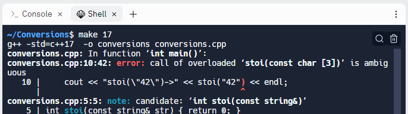

Stub the Replacements
Place these definitions for the functions right above main.
int stoi(const string& str) { return 0; }
double stod(const string& str) { return 0.0; }Now, type make 98 once again. You'll see that the code compiles and "runs" (although your stubs don't produce the correct value, of course).
What happens when you upgrade to Visual Studio 19? Will the code still compile? Nope! Your version of stoi() conflicts with the one already defined inside the new C++ standard library; we get a clash of symbols.

At link time, there can be only one copy of the stoi() function in the executable; if the library already has one, your program won't link. This is called the ODR or One Definition Rule.
What you would like to say is: "if I'm using C++11 or later use the library version, and, if I'm using an older version of C++, then use the version which I've written". You can do that with conditional compilation.
 This course content is offered under a
CC
Attribution Non-Commercial license. Content in this course
can be considered under this license unless otherwise noted.
This course content is offered under a
CC
Attribution Non-Commercial license. Content in this course
can be considered under this license unless otherwise noted.